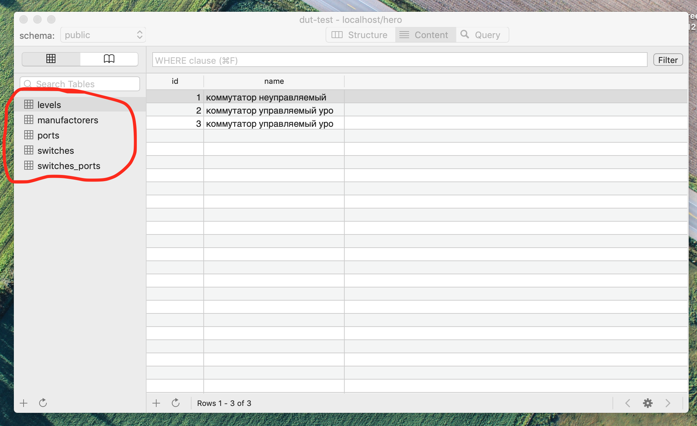

Выполним команду echo 'select * from book limit 1' | psql -h localhost -p 23395 -U hero -d hero
 Видим, что миграция сработала и данные присутствуют в таблице book
Видим, что миграция сработала и данные присутствуют в таблице book
Выполним команду echo 'select * from reader limit 1' | psql -h localhost -p 23395 -U hero -d hero
 Видим, что миграция сработала и данные присутствуют в таблице reader
Видим, что миграция сработала и данные присутствуют в таблице reader
Выполним команду echo 'select * from issue limit 1' | psql -h localhost -p 23395 -U hero -d hero

Видим, что миграция сработала и данные присутствуют в таблице issue